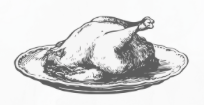

slow cooker
thanksgiving
turkey
INGREDIENTS
- 1 bone-in turkey
- 1 carrot, chopped
- 1 packet onion soup mix
- 1 small onion, quartered
- 1 stalk celery, chopped
- 2 tablespoons melted butter
- 1/4 cup all-purpose flour
- 1/2 teaspoon black pepper
- 1/2 teaspoon dried sage